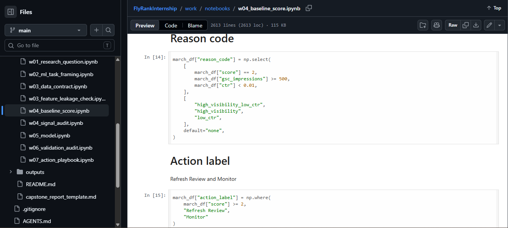
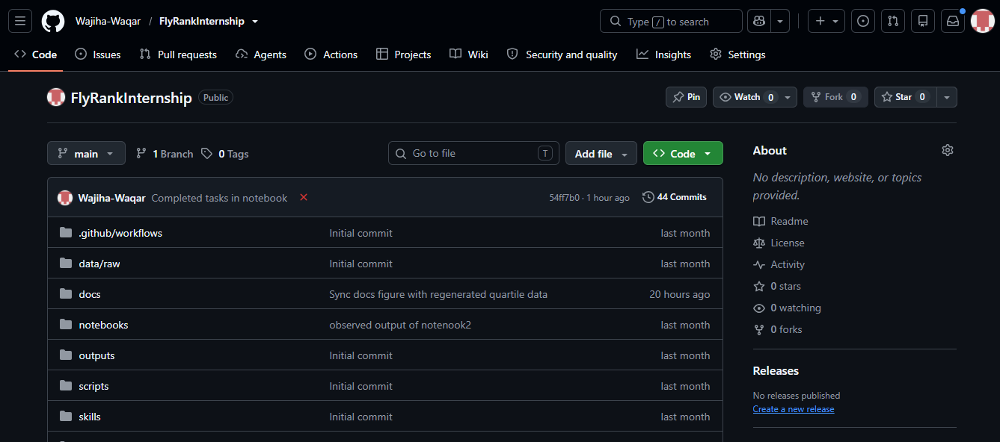

FlyRank Search Intelligence Internship
Machine Learning • Data Engineering • DuckDB • Python • SEO Analytics
Problem
Identify pages that deserve review before applying machine learning. SEO teams manage large numbers of content pages but have limited capacity to update them all, so pages need to be prioritized using search performance signals before any model is built.
My Role
- Performed signal validation
- Designed transparent scoring rules
- Generated ranked action queues
- Evaluated baseline logic
- Reviewed top-ranked pages
Tools
DuckDB
Python
Pandas
NumPy
Google Colab
Evidence

Notebook: baseline scoring and signal validation

Project repository on GitHub
Lessons Learned
- Machine learning should always outperform an understandable baseline.
- Transparent rules improve trust and explainability.
- Feature leakage must always be avoided.
- Signal validation is essential before model development.